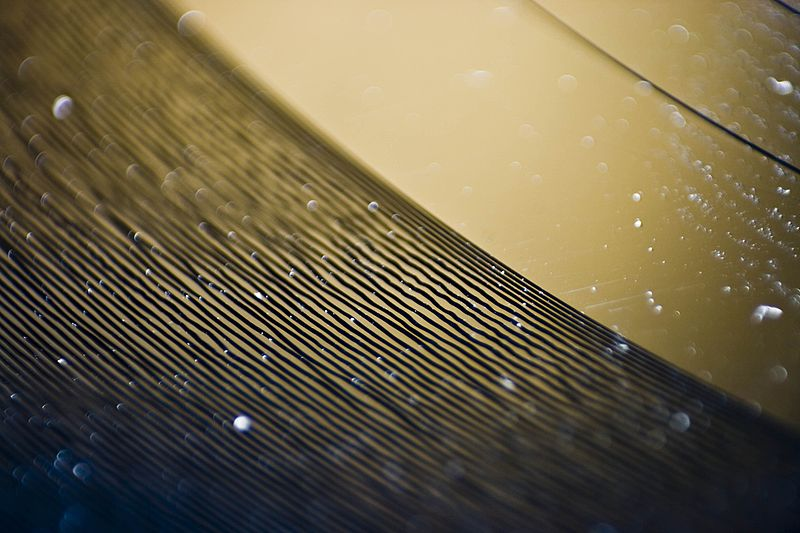
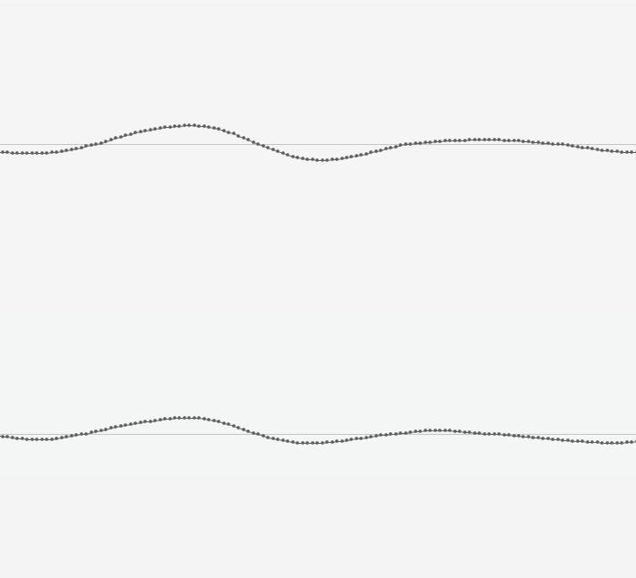
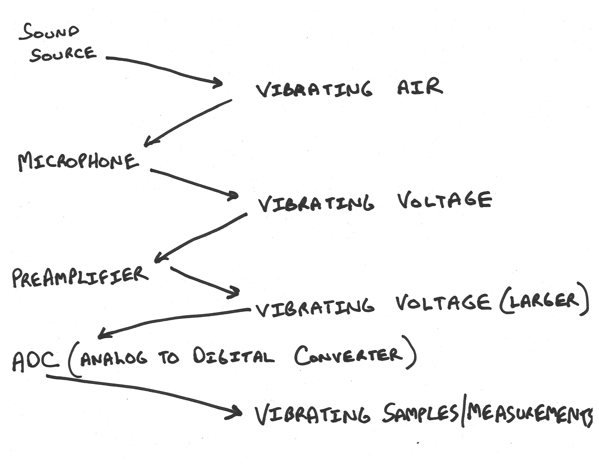
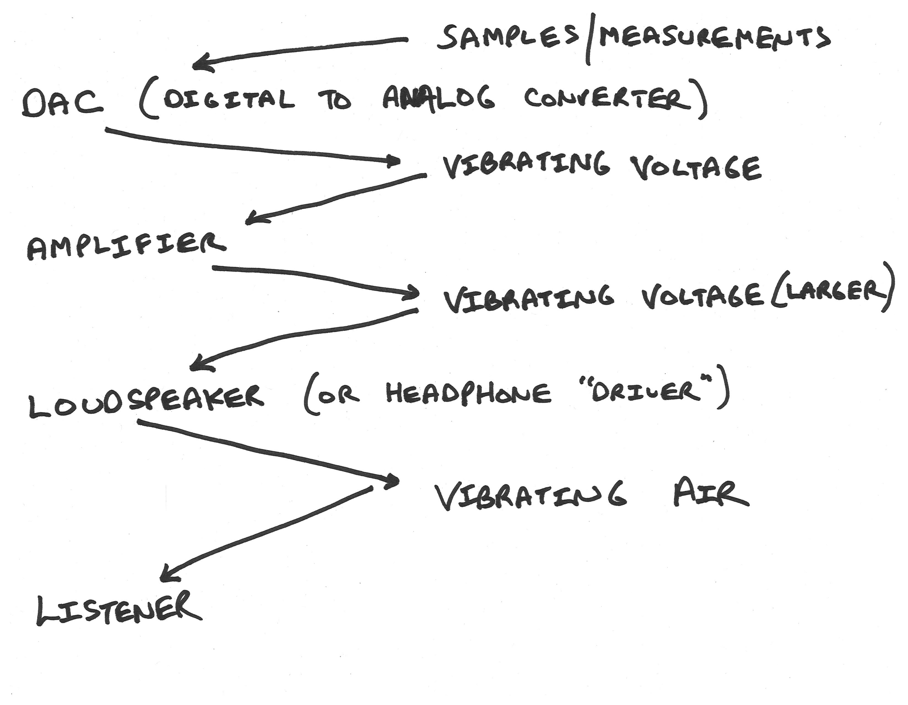
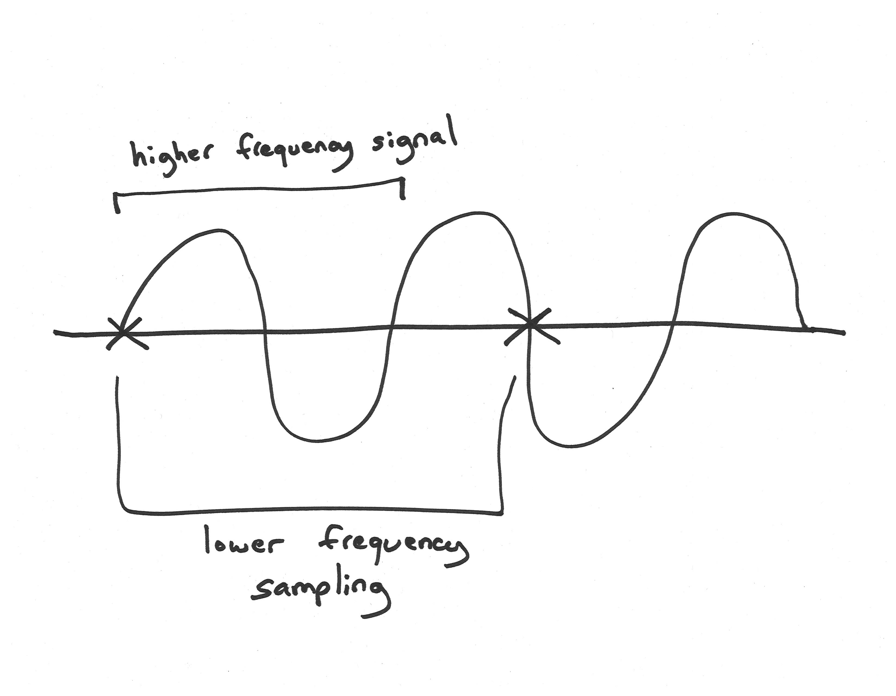
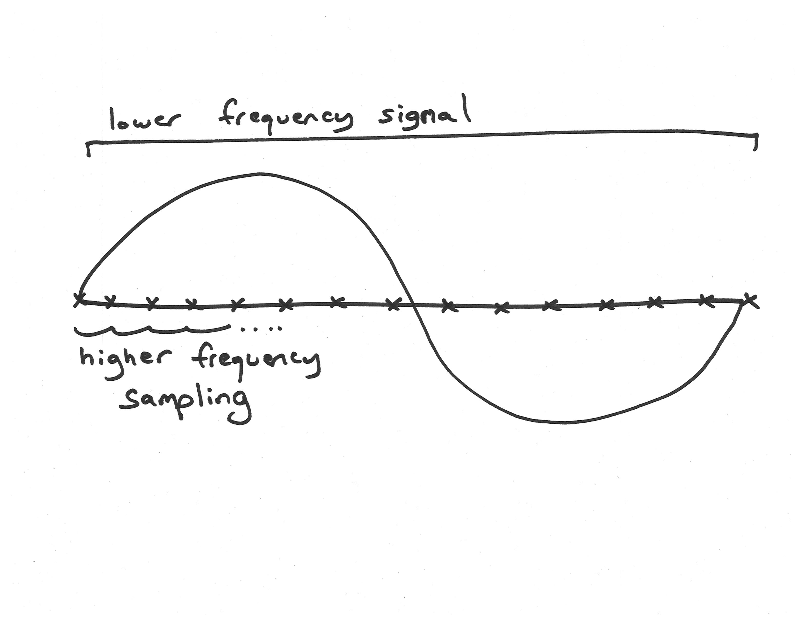
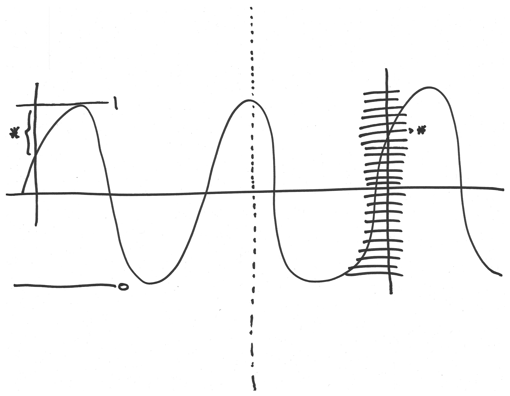

MEDIAART 2G03: Sampling Theory
Analog and Digital Recording
Let’s start by contrasting the way digital audio works with “analog audio” technologies, such as LPs, cassette tapes (or other kind of tape formats), wax cylinders, etc work. All of these analog audio recording formats work by transferring the shape of a vibration in the air into an analogous shape in some physical medium. If we look at this close up of a piece of vinyl (a vinyl record) [image below], we can see that there are these grooves in the record. And what happens is that (oversimplifying a little bit), the needle of the record player goes through that groove, and it's able to then transfer the shape of that groove back to the shape of (at first) vibrating electricity, and then later to vibrating air again.

In general, with analog audio recording technologies, the shape of the air vibration also exists in an analogous shape in some kind of physical medium. And the potential problem with this is that physical media shapes and physical media tend to change over time. These types of recording formats often are not as in great a shape five or ten or twenty or fifty years later, and this becomes one of the major attractions or motivations for specifically “digital” audio recording technologies. The image below is a close-up of zooming in to a waveform in the Reaper digital audio workstation (so zooming into a digital representation of a sound signal):

And if we look quite closely, we can see that the waveform is not just a smooth line, in fact it's a series of these little dots (very regularly spaced dots) at different amplitudes (high or low). And so what we're seeing here by zooming in on this waveform, is something very fundamental about digital recording. In digital recording, the shape of the air vibration, instead of being transferred to another analogous shape in a physical medium, becomes a series of measurements. We can think of each one of these dots, each of which represents a measurement, we can think of them as a number, with lower numbers lower down and higher numbers higher up. And when we think of that shape as a series of measurements or a series of numbers, we can then represent those numbers in a very precise and lasting way using digital bits (more on that in another module).
Here's what a typical chain looks like when we use digital recording technologies [image below]:

At the beginning of the chain, we have some kind of sound source, could be someone talking. And the energy that they put into the air (the vibrations that they put into the air) travel through that distance as vibrating air, and they arrive at a microphone. And the microphone transduces all of that vibrating air into a very tiny vibrating voltage (could be a positive voltage, could be a negative voltage). And then it goes into a preamplifier and becomes a slightly larger vibrating voltage. And then in our digital recording chain, that slightly larger vibrating voltage is fed to an analog to digital converter (ADC), which takes that vibrating voltage and it regularly measures it, and turns it into that series of numbers. That measurement, at a specific moment, is fundamental to digital recording, and is what differentiates digital recording from analog recording. We can also look at the digital playback chain, which is going to be very similar, but in reverse [image below]:

The digital playback chain might start with a long series of samples or measurements. A key component called a digital to analog converter (DAC) takes those measurements and turns them back into a continuously varying, continuously vibrating electrical voltage. That voltage is generally pretty small, so there's an amplifier that turns it into a larger voltage, and hopefully that larger voltage is big enough that it can make a loudspeaker cone, or the “driver” inside a headphone, move. And whether it's a loudspeaker cone or a headphone driver, that motion then becomes vibrating air molecules again, and those vibrating air molecules (that vibration in the air), eventually reaches some kind of listener in the playback situation.
Sampling Rate (Sample rate)
And so now let's get to some of the detailed questions about how digital recording works. And probably the first and most basic question is: with digital audio recording, we're going to measure the audio levels periodically, so exactly how often do we need to make those measurements? Let's consider two scenarios.

Scenario number one: imagine that the curvy line in the middle of this image [above] is some signal that we want to record. It's a regular frequency (it looks like a sine wave), and it has a certain frequency which is defined by the distance between repetitions. And let's say that we take measurements where I've marked the X's on the diagram. So the X's are somewhat further apart than the repetitions of the curvy line. If those were our measurements, we would be sampling/measuring at a lower frequency than the frequency of the signal we are trying to record. In that case, our measurements wouldn’t even come close to be able to reflect the shape of what we are trying to capture. What if we flip things around?

On this image [above], here again we have some frequency in a signal that we're trying to measure, and now we're making the measurements at all of these X's and they're very close together. So now we are are actually measuring much faster (at a much higher frequency) than the frequency of the signal that we're hoping to capture. And this is going to work much better because we're going to have many measurements for each part of the underlying shape we’re trying to capture. It still won't have exactly the same shape as our original signal, but clearly it'll be a much better representation of what we're trying to capture.
So we've arrived here at a basic idea, a basic answer to this question of how fast we need to measure. Clearly we need to measure at a somewhat higher frequency than the highest frequency in what we are trying to record. And there's a theorem about this which actually gives us an even more precise answer to what kind of sampling rate we need: the Nyquist theorem, which says that that the highest representable frequency, in a digital audio system, is exactly half the sampling rate.
For example, if we are taking measurements 10,000 times per second (10,000 Hertz), the highest frequency we'll be able to represent will be half of that, or 5,000 Hertz. We can also call that frequency the Nyquist frequency; in other words, the Nyquist frequency is that frequency which is half the sampling rate, which is going to be the highest one that you can record without having certain problems.
So some common sampling rates...
44,100 Hz (44.1 kHz) is the sampling rate that was set by the CD audio standard in the 1980s, and it's still with us and it's still commonly found in audio files, in computer audio and in other settings. And if we think about what we just said about the Nyquist theorem, the highest frequency we're going to be able to represent using this sampling rate is going to be half of that, and half of 44,100 is 22,050 Hz. And so if you think back to what we've said about the limits of human hearing in terms of frequency, we said that a common figure for the upper limit (for the highest frequency which someone might be able to hear – no guarantees) was in the neighborhood of 20,000 Hz. And so the Nyquist frequency of the CD audio standard gives us a frequency that's a bit higher than that. So in theory, we should be able to represent all of the frequencies that human beings might be able to hear using this sampling rate.
Another common sampling rate is 48,000 Hz, just a little bit higher (48 kHz). This is really common in video equipment. And the Nyquist frequency of that again is going to be half of the sampling rate and it's going to be 24,000 Hz, which again, is somewhat above the usual limit for human hearing.
We will also sometimes encounter equipment and files that have been recorded at 96,000 Hz or 96 kHz. This is sometimes appropriate for fancy audio work, but it's not always advantageous. The Nyquist frequency, if we think about it, is going to be half of that, it's going to be 48,000 Hz, which is really very far above the upper limits of human hearing in terms of frequency. And so the question is going to arise: Well why would we actually want to do this? Why would we want to use a format that records frequencies so far above what we can actually hear?
And there's really two reasons (they're both kind of specialized) why we might want this. The first is that perhaps we actually do want to record things that are higher than what we can hear, and later transform those higher frequencies into things that are in the range of things that we can hear. So that's one reason to use a very high sampling rate. Another, perhaps more common reason, is that in building the hardware that does this digital audio sampling, there are some special considerations around filtering out things that are above the Nyquist frequency. And those filters that filter out things above the Nyquist frequency, so we don't get weird recordings, can be designed in different ways, and perhaps in ways that are more flattering to the audio or more neutral, when the Nyquist frequency is really, really far away from the limit of our hearing. That said, I think for a lot of normal work we don't need to go to this length of using very high sampling rates.
Bit Depth and Digital Quantization Noise
And now we're going to flip to the other dimension and talk about how much detail each of our measurements has. Ultimately, each of our measurements is going to be recorded as a number in a computer or a media system. And in that computer or in that media system, that number is going to be represented with bits. Bits are simple yes/no values, they're something that can be either a "yes" or "no," an "on" or an "off," and by combining lots of these bits we can represent larger and larger spaces of possibility. For example, if all we have is a single bit, one "yes" or "no," clearly there are two possibilities there ("yes" or "no"). But if we have a "yes" or "no," and another "yes" or "no" (in other words two bits), there are four possible combinations of those things. We can have no/no, no/yes, yes/no, and yes/yes. And if we have three bits, like yes/no, and another yes/no, and another yes/no, then there are eight possibilities. And every time we add an additional bit, every time we add an additional mark representing a "yes" or "no," we're going to be doubling the number of possible combinations of all those things. So that is the basic math (the combinatorial math) of bits and digital numbers.
So now let's kind of keep that in the back of our minds and think about what's going to happen if we try to measure how high or low a signal is when we have a very low number of possibilities, versus a very high number of possibilities:

On the left of the image above we're showing the low number of possibilities scenario, and over on the right we're showing the high number of possibilities scenario. In both cases, the curvy line is some signal we want to record. On the right we’re measuring the signal, but we only have two possibilities (0 here and a 1 here) for measuring the signal. There are going to be lots of big differences between what the signal is and our measurement of it, if we can only record two different possible “heights” (amplitudes). An example of such a difference is marked on the diagram with a star/asterisk. The important thing to realize about this difference is that it's basically random. Our measurements are all going to be off by some difference that is less than half of the distance between our two possibilities.
Now let’s consider the image on the right (above), where we have lots more possible measurements we can make, lots more possible values we can give to each measurement. There's still going to be a little bit of a random difference between the signal that we really want and the measurement we get, but it's going to be much smaller because we have so many more possibilities.
So if we were to listen to this signal, it would not sound like the original signal. It would sound like the original signal, as well as some random difference that was added by the (small) discrepancy between what our system of measurement was capable of representing and the original. And since that difference is random, it would basically be a kind of noise, it would be a kind of hiss, a kind of digital noise, and as we'll see it has another name in a second.
Every additional bit that we add to our measurements is going to make that random difference between the actual thing and what we record, half as big. It's going to make that random noise half as big, it's going to make it twice as small. In other words, the digital noise which also gets called "quantization error", is going to go down by six decibels. And so we will be able to roughly estimate how big the digital noise in our system is, by multiplying minus six decibels by the number of bits that we're using for each measurement.
Here are some typical bit depths in our digital audio formats:
Eight bits: still occasionally see it in greeting cards. If we take eight bits and we multiply it by -6 dB, we're going to get some digital noise at around -48 dBFS. Now if you remember some of the things we said about the range of human hearing in terms of levels, we sort of expect that this is going to be the kind of noise that is probably going to be easily audible at many playback volumes. And it's one of the reasons why a lot of those digital greeting cards sound so bad and sound so noisy.
Sixteen bits is the bit depth that was used in the CD audio standard. And if we take 16 bits and we multiply it by -6 dB, we get -96 dBFS. Now if you think about that number, basically what that's saying is that the digital noise (the quantization error) is going to be about 100 dB below the maximum level that we can represent. And you know -100 dB is kind of on the borderline of being something that is perhaps going to be too quiet for us to hear in many playback situations. But if it gets a bit louder, like if we make that digital noise 20 dB louder by amplifying it, then maybe it is going to come into the range of something that we can hear and be irritated by.
And that is really the reason why we might be interested in using 24 bits to record each of our measurements. Because when we use 24 bits and we multiply that by -6 dB, that digital noise floor (that quantization error) is going to be down at around -144, call it -150 dBFS, which is really well beyond the range of human hearing in terms of level. And we're really going to have to amplify that digital noise, or increase it a lot for it to come into the range of something that is a problem for us, that it's something that we notice audibly. So strong reasons there to prefer 24 bits in our recording.
The 48kHz 24-bit sweet spot
And so in fact, I think that there's a kind of sweet spot when we're using a sampling rate of 48 kHz and a bit depth of 24 bits, and it's why we've recommended that rate for a lot of our project and tutorial work in this course.
If you think about it, we want a sampling rate whose Nyquist frequency is a bit above what we can hear, and we want a bit depth that's going to put that digital noise pretty far away from becoming audible. We also don't want to record too much data: we don't want to have files that are much bigger than what is necessary to accomplish our goals. And so 48 kHz for sampling rate and 24 bits for a bit depth tends to accomplish all three of these goals.
But with good equipment, and if we can verify that it genuinely is going to make an audible difference to our work, we certainly could work at higher sampling rates and bit depths. We would just have to accept that one of the costs of that would be having bigger files that we have to carry around, maintain, copy, backup and all that kind of fun stuff.